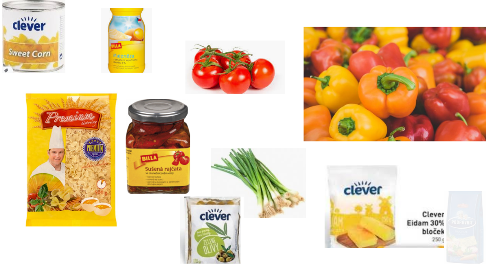
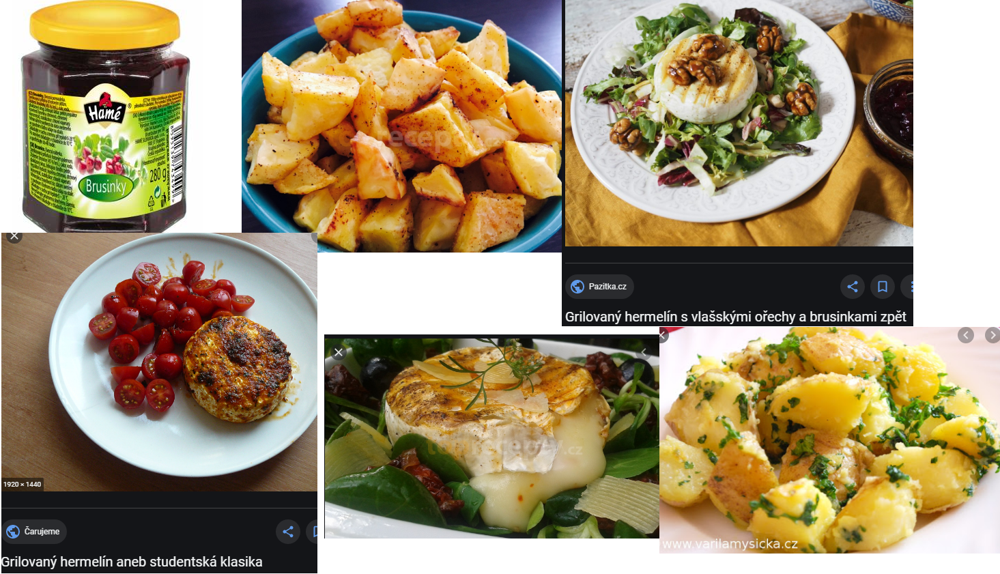
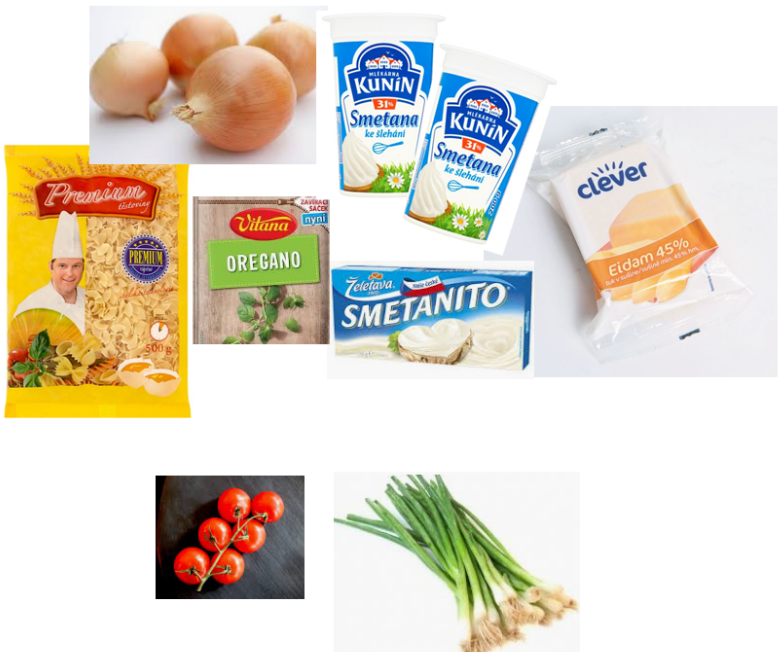
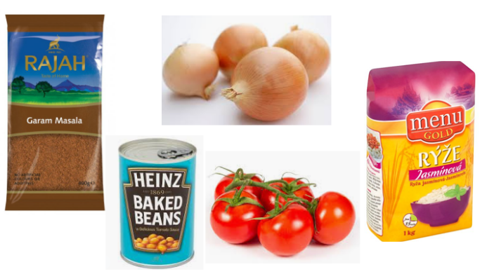
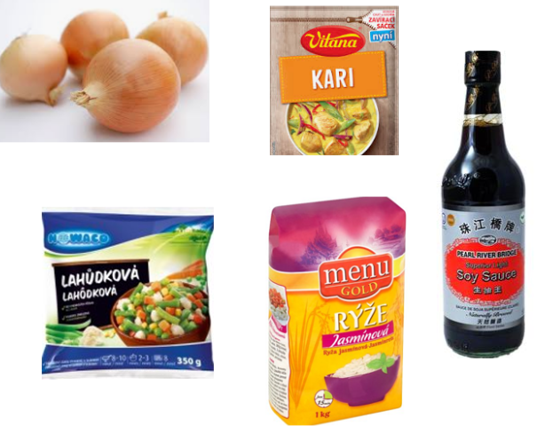
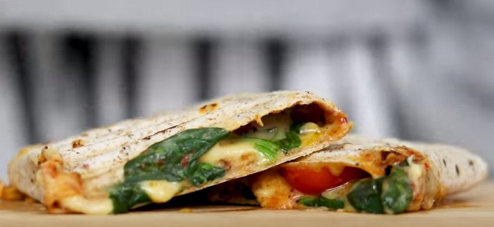
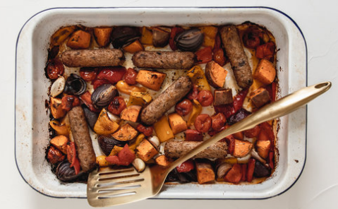

food
To je žrádlo
Těstovinový salát
- hermelín
- brambory/salát
- brusinky
- koření na brambory
- rajčata

Kari
- kari pasta (žlutá/červená)
- tofu
- mrkev
- papriky
- cibule
- rybí omáčka
- kokosové mléko
- lilek
- třtinový cukr
Hermelín
- hermelín
- brambory/salát
- brusinky
- koření na brambory
- rajčata

Jen tak halabala to vysypat na tác
Sýrová omáčka
- eidam
- sladká smetana
- česnek
- oregano
- cibule
- tavený sýr
- podávat s rajčaty, jarní cibulkou

Fazole
- rajčata
- rýže
- gram masala
- cibule
- fazole

Smažená rýže
- rýže
- cibule
- mražená zelenina
- kari
- sójová omáčka

Tortilla
- sýr
- salát
- pesto
- rajčata
- tortilly
- olivy

Grilovaná zelenina
- červená cibule
- batáty
- cizrna
- brambory
- petržel
- mrkev
- celer
- dýně
